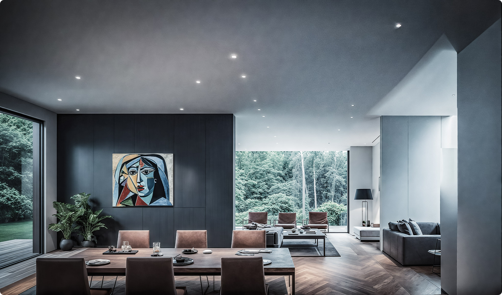
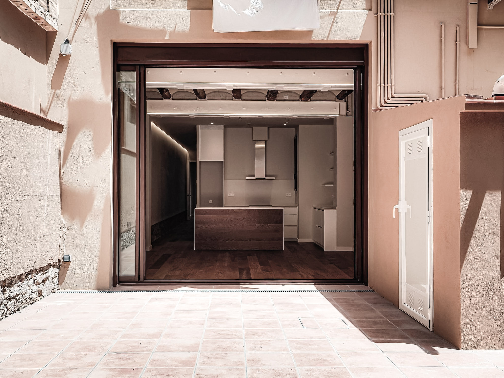

Proyectos
OBRAS SELECCIONADAS

FUYU
2026
VILA CLARA
2024
CLARO DE LUZ
2025
PASSACAGLIA
2023
Concebimos proyectos donde la luz natural esculpe formas sencillas, creando una arquitectura atemporal.



Frase del proyecto...
Párrafo introductorio...
Texto del capítulo 1...
Texto del capítulo 2...